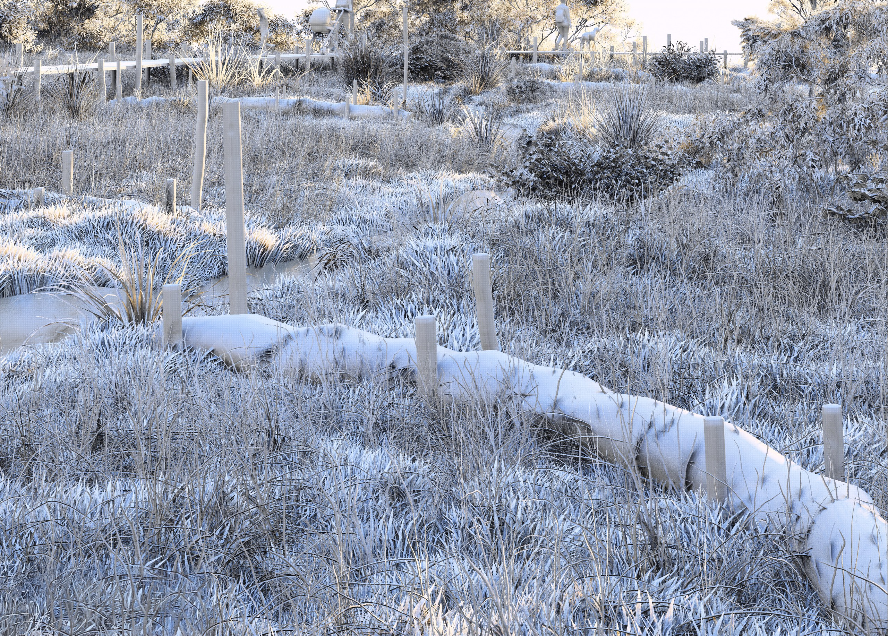
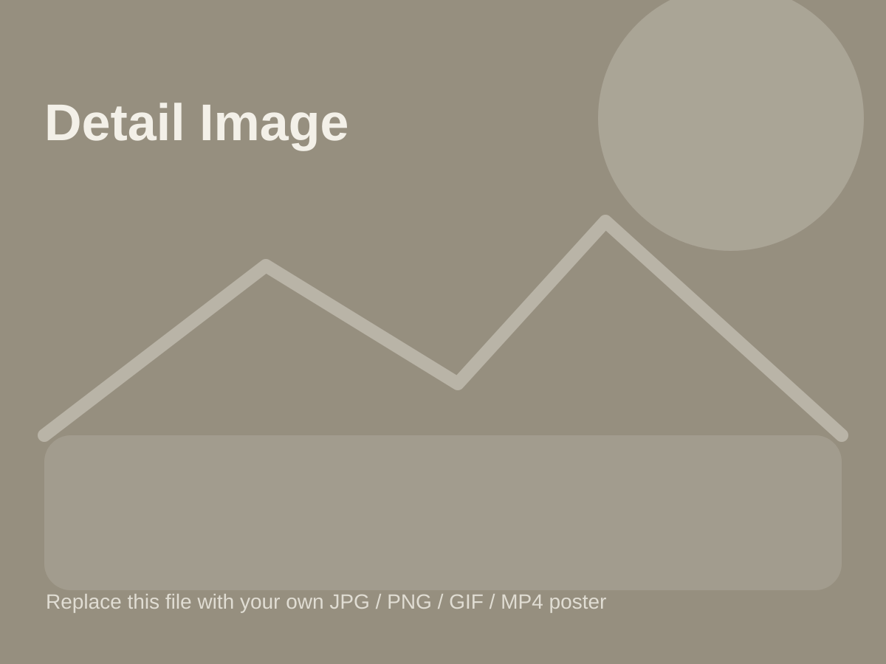
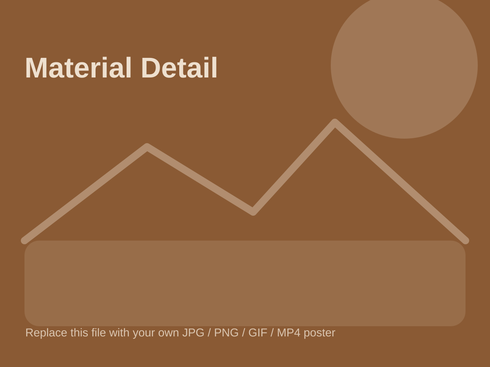

Landscape | 2025
Swamp Studio

Overview
This project uses mapping, timelines, and visual storytelling to explore swamp ecologies, seasonal knowledge, and layered histories of place. It approaches landscape as a living archive rather than a neutral background for design.
Replace this with your final studio explanation, including research methods, diagrams, site walks, and exhibition outcomes.
Representation
The work combines ecological markers, historical fragments, and cultural narratives into diagrams that communicate transformation across time.

